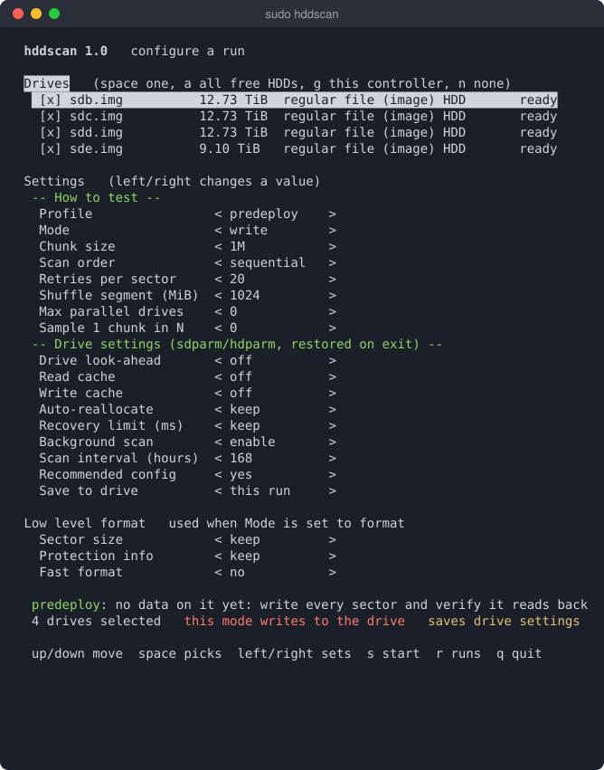
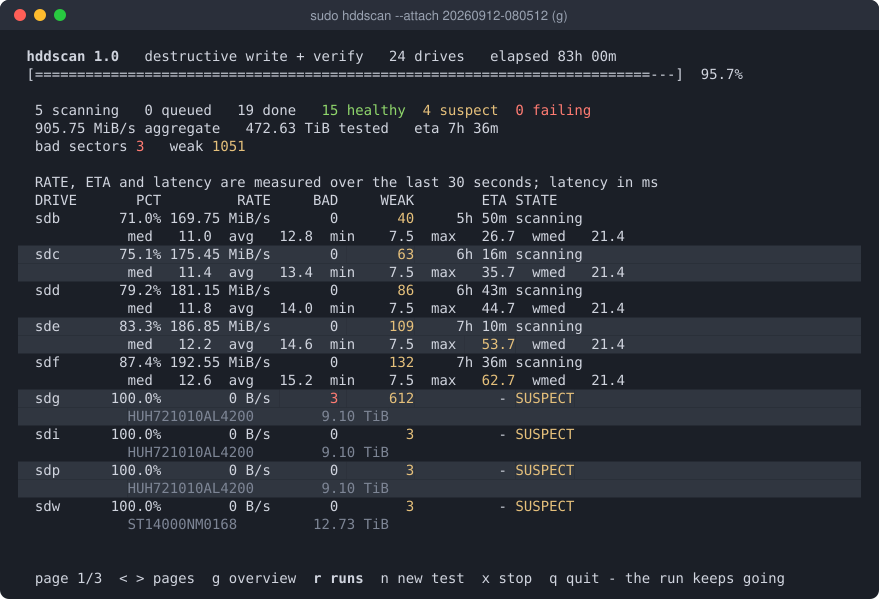
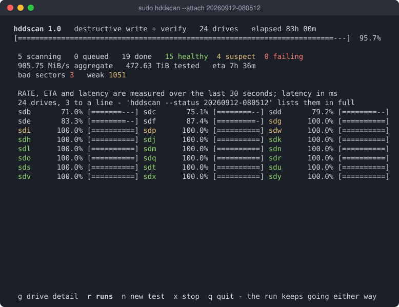
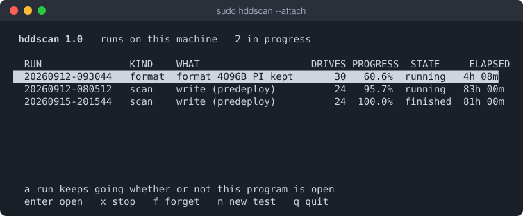
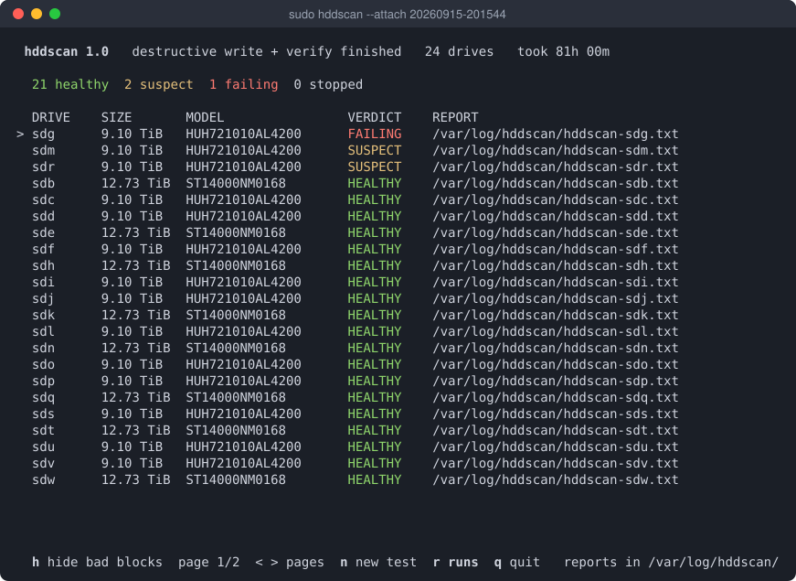
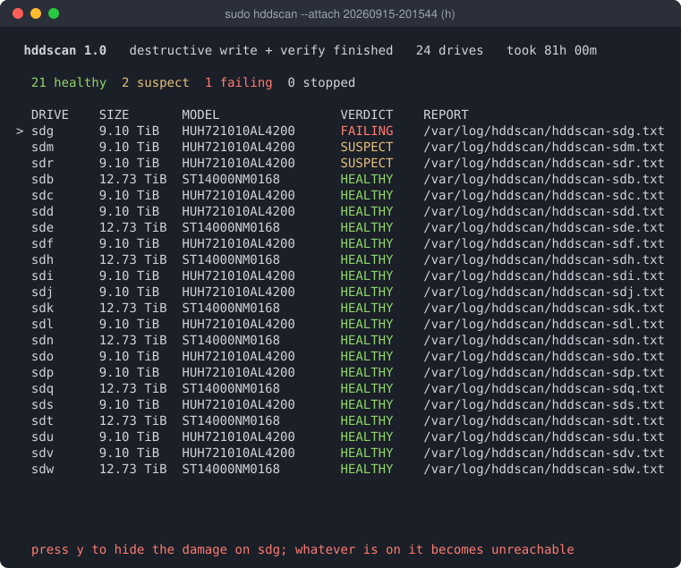
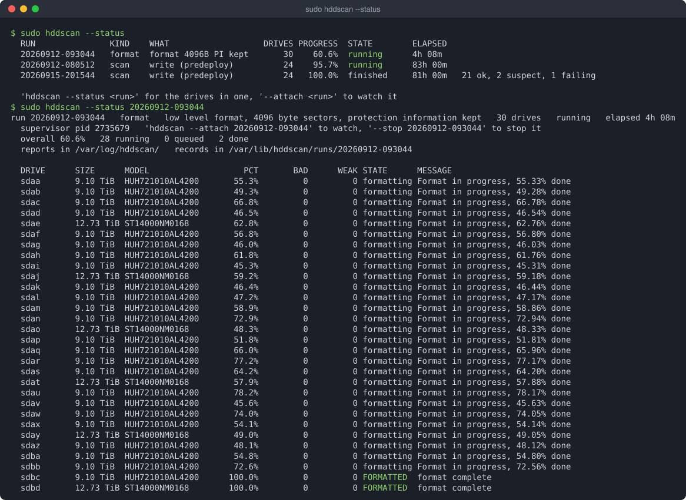
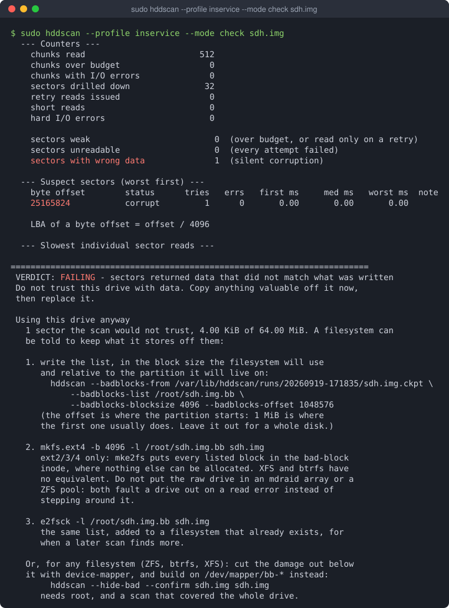
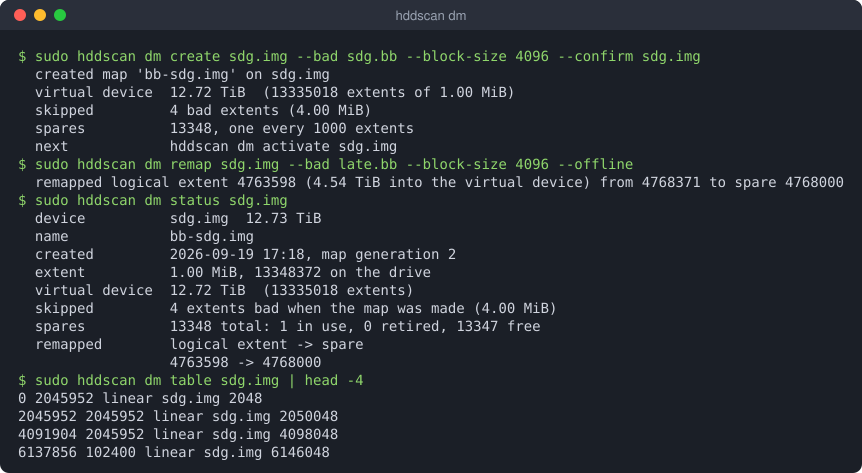

hddscan guide
hddscan finds sectors on a rotating disk that return data too slowly or not at all. You can drive it from an interactive form or entirely from the command line; both do the same things with the same defaults, so a report from one can be compared with a report from the other.
Install
git clone https://github.com/IntelliStream-DataHub/hddscan
cd hddscan
make # dynamic build; needs glibc 2.38 or newer where it runs
make static # no glibc floor: one file for a rescue system
sudo make install # /usr/local/sbin/hddscan, the man page, and a dm-badblocks linkOr take a static binary from Releases, built and tested on x86_64 and aarch64. It is one file with no glibc version floor, so it also runs from a rescue system:
tar xzf hddscan-1.0-linux-x86_64.tar.gz
sudo install hddscan-1.0-linux-x86_64/hddscan /usr/local/sbin/It needs nothing beyond libc. It uses these tools when they are installed
and does without them otherwise; hddscan --check-deps says which
are missing and prints the dnf or apt line that
installs them.
| Tool | What it adds |
|---|---|
smartctl | SMART counters before and after the scan, and on SAS the error counter and self-test logs |
sdparm | SAS drive settings: look-ahead, caches, auto-reallocation, background scan |
hdparm | the same for ATA drives, where they exist |
sg3_utils | low level format, and forcing a reallocation |
dmsetup | loading a bad-block map as a device |
Reading a drive needs root. Everything else (reports, run records, the maps on image files) does not.
Concepts
Profiles
The first question is what you are about to do with the drive, because that decides how it should be tested. A profile sets the mode and the passes that go with it; any flag you give explicitly overrides it.
| Profile | Mode | For |
|---|---|---|
| predeploy (default) | write | No data on it yet. Writes every sector, verifies it reads back, and leaves a SAS drive configured for service. |
| inservice | read | It holds data you want to keep. Never writes anything. |
| survey | read, sampled | Quick triage of a shelf: reads one chunk in 64. |
| decay | check | Weeks after a predeploy run: has the written pattern rotted? |
| repair | write | Predeploy, plus rewriting what is still slow and forcing a reallocation of anything unreadable. |
The default writes, because a surface test is
normally run before a drive goes into service, and a read-only pass cannot tell
you whether a sector will accept a write. So a bare
hddscan /dev/sdb stops and asks for --confirm
instead of doing anything: an error, never data loss.
Verdicts and sectors
Every sector that does not simply come back is one of three things:
| Sector | Meaning |
|---|---|
| weak | Over its latency budget, or readable only on a retry. The drive is still returning the data, by grinding for it. |
| unreadable | Every attempt failed. |
| corrupt | It read back, but not what was written: silent corruption, found by the write and check modes. |
Each drive then gets a verdict, which is also the exit status: HEALTHY (0), SUSPECT (1) or FAILING (2); 130 means the scan was interrupted. Every report also carries a Coverage line. A verdict of HEALTHY over 3% of a drive is not a healthy drive, and the report will not let that difference get lost.
The terminal UI
Run sudo hddscan on a terminal with no device named and it
opens the form. If work is already running on the machine, it shows that
first.
The form

Drives come first. Space picks one, a picks every free hard disk, and g picks every free disk on the same controller as the one under the cursor, which is one keystroke per shelf. Drives that are mounted, in use or already in a run are shown but cannot be picked.
The settings below are in three groups, because they answer different questions:
- How to test: profile, mode, chunk size, scan order. Changing the profile resets the rest to what that profile means.
- Drive settings: look-ahead, caches, auto-reallocation, recovery limit, background scan. These change the drive itself and are put back when the run ends, unless Save to drive or the profile says otherwise.
- Low level format: used only when Mode is format.
Press s to start. Anything that writes, saves a setting or erases the drive asks again, and needs y.
The dashboard

Rate, ETA and latency are measured over the last 30 seconds, so a drive that has just walked into a bad patch shows it now rather than hours later. Drives needing attention sort to the top. A shelf is more drives than a screen holds, so the table pages with < >, and g swaps it for an overview with one line per drive:

The dashboard is only a viewer. q quits and leaves the run going; x then y stops it, and so do Ctrl-C or Esc, immediately. A stopped drive still writes its report, with a Coverage line saying how far it got.
Runs

A scan or a format is a run, owned by a supervisor process of its own rather than by the terminal that started it. Close the window or lose the ssh session and it carries on; start hddscan again and this list is the first thing you see. Enter opens a run, x stops one, f forgets a finished one. A drive already in a live run is refused by any other, since two runs on one spindle would time each other's seeks.
The summary

A scan can run for days, so its result does not scroll away when the last
drive finishes: the summary holds every verdict until you press a key.
n starts another test and q quits. For a drive whose
scan covered the whole drive and found damage, h hides it behind a
device-mapper device (see below). ↑
↓ choose the drive, marked with >, and
y confirms:

Keys
| Screen | Keys |
|---|---|
| Form | ↑↓ move · Space pick a drive · a all free · g this controller · n none · ←→ change a value · Tab to the settings · s start · r runs · q quit |
| Dashboard | <> or ←→ pages · g table / overview · r runs · n new test · x stop · q quit, the run keeps going |
| Runs | ↑↓ choose · Enter open · x stop · f forget · n new test · q quit |
| Summary | ↑↓ choose a drive · h hide its bad blocks · <> pages · n new test · r runs · q quit |
The command line
Name a device and hddscan runs without the form. Devices can be given as
/dev/sdb, sdb, or a regular file to use as an
image.
Common tasks
# a drive with data on it: read-only, never writes
sudo hddscan --profile inservice /dev/sdb
# a drive going into service: writes every sector, verifies, re-reads
sudo hddscan --confirm sdb /dev/sdb
# quick triage of every free disk on the machine
sudo hddscan --profile survey --all
# weeks later, on a drive an earlier predeploy run wrote
sudo hddscan --profile decay /dev/sdb
# give a drive its best chance: write, rewrite what is still slow,
# force a reallocation of anything unreadable, then re-read the lot
sudo hddscan --repair --confirm sdb --recovery-time 300 /dev/sdb
# a shelf, in the background
sudo hddscan --confirm sdb --detach /dev/sd{b..z}--confirm takes the device name as given, or the drive's
serial. A full pass over a 14 TB drive takes about a day, and
--repair roughly twice that. On a drive that is already sick, two
flags matter more than they look: --recovery-time 300 stops the
drive grinding a second on each bad sector, and --retries 3 stops
the tool grinding twenty attempts on each.
Watching runs

sudo hddscan --status # every run on this machine
sudo hddscan --status sdq # the run a given drive is in
sudo hddscan --status-json # the same, for a script
sudo hddscan --attach 20260912-080512 # open the dashboard on one
sudo hddscan --stop 20260912-080512 # stop it; partial reports are still written
sudo hddscan --forget 20260912-080512 # drop a finished run's recordsRecords live in /var/lib/hddscan as root and
~/.local/state/hddscan otherwise, as plain key-and-value text.
Reading a report
Every drive gets a text report: the drive, the profile and mode, the Coverage line, latency percentiles and distributions, a surface map, the counters, and every suspect sector with how many tries it took. It ends with the verdict and what to do next.

A report never contradicts itself. Two numbers describing the same thing are computed the same way, and blocks the scan could not test (for example on a drive formatted with protection information and never written since) are listed as not covered rather than counted as either good or bad.
Hiding bad blocks
A drive with a few hundred bad sectors can still be a good backup target, as long as we make the bad/weak sectors inaccessible. There are two ways to arrange that:
- ext2/3/4 can take a list of bad blocks when the filesystem is made. The report prints the commands, with the numbers filled in.
- Any filesystem, ZFS included: hddscan writes a map of the damage onto the drive and loads it with device-mapper, so the filesystem sees a slightly smaller device with none of the known damage in it. No kernel module.
sudo hddscan --profile inservice /dev/sdc # a whole-drive scan
sudo hddscan --hide-bad --confirm sdc /dev/sdc # map it: /dev/mapper/bb-<serial>
sudo zpool create -o ashift=12 -O compression=zstd backup /dev/mapper/bb-<serial>The damage is only ever taken from a scan that covered the whole drive and
finished. A list from a sampled or interrupted scan would hide the damage it
happened to look at and leave the rest in the middle of the new device. The
drive is found by serial, since sdc may be sdd after
a reboot.

The map keeps the drive in its original order and steps over the damage
known when it was made. Damage found later is moved to the nearest of the
spare extents held back for it, 0.1% of the drive spread across the platter,
so a moved extent costs a short seek. Two copies of the map, with checksums,
live at the start and end of the drive. hddscan dm manages it
directly, and is also installed as dm-badblocks:
sudo hddscan dm status /dev/sdc
sudo hddscan dm remap /dev/sdc --bad new.bb --block-size 512 # sectors from the kernel log
sudo hddscan dm activate-all # what runs at bootcontrib/dm-badblocks.service activates every mapped drive at
boot, before local filesystems and ZFS imports. On a single disk, ZFS can
repair a bad block only if it has a second copy, so set copies=2
on the datasets that matter.
Not yet run on real hardware: loading a map with device-mapper, remapping on a live device, and the boot unit. The map itself and data surviving a remap are tested on image files.
Drive settings
hddscan can change how a drive behaves, through sdparm or
hdparm. Settings a scan needs are put back when the run ends,
on Ctrl-C and on error; settings meant to last are saved on the
drive and announced with the command that undoes each one.
- For the scan: the drive's look-ahead is turned off, so a prefetch cannot mask a marginal sector, and so is its read cache.
- Predeploy and repair also turn the write cache off for the run, so the write pass times the platter rather than the drive's memory.
- Predeploy and repair save
--fix-config(auto-reallocation on for reads and writes, read cache on) and the drive's own background scan, weekly.--no-fix-configand--bms keepopt out. None of it applies if you override the mode. --persistsaves the settings you named explicitly, never a default.--apply-settingsapplies them without a scan.
Low level format
# see exactly what it would run
sudo hddscan --format --format-pi none --confirm sdb --dry-run /dev/sdb
# strip protection information, keep the sector size
sudo hddscan --format --format-pi none --confirm sdb /dev/sdb
# change the sector size too, and ask for a fast format
sudo hddscan --format --format-blocksize 4096 --format-pi none \
--format-fast --confirm sdb /dev/sdb--format runs a SCSI FORMAT UNIT on every selected drive in
parallel, as a run like any other. It erases the drive and cannot be called
back, so it prints the exact sg_format command first.
--format-pi defaults to keep, because
sg_format itself defaults to stripping protection information.
Removing it can recover real capacity: on one 14 TB Seagate it gave back
284 GB.
Files it writes
| File | What |
|---|---|
hddscan-<device>.txt | The report, in --outdir |
--json, --csv | Machine-readable report, and every suspect sector |
--badblocks-list | Bad sectors in badblocks(8) format, ready for mkfs -l |
--prometheus | Metrics for node_exporter's textfile collector |
/var/lib/hddscan/runs/ | Run records and a checkpoint per drive, which --badblocks-from and --hide-bad read |
Option reference
Generated from hddscan --help. man 8 hddscan has
the same options at more length.
Usage: hddscan [options] [device ...]
hddscan --list
hddscan --status [RUN|DRIVE]
Run on a terminal with no device named, hddscan opens the interactive picker; --no-tui turns that off. Devices may be given as /dev/sdb, sdb, or a regular file to use as an image. With no device and --all, every unmounted rotational disk is scanned.
Selection
--profile NAMEwhat you are about to do with the drive, which sets the mode and the passes that go with it. Default 'predeploy', so a bare run stops and asks for
--confirmrather than doing anything: predeploy no data on it yet: write every sector and verify it reads back, 1M chunks, write cache off for the run. Leaves the drive configured for service:--fix-configand--bmson, weekly, SAVED on SAS drives inservice it holds data you want to keep: never writes anything survey quick triage of a shelf: samples the surface, read only decay weeks after predeploy: has it rotted? repair predeploy, plus forcing a reallocation of anything unreadable Any explicit flag overrides what the profile set, whichever order they appear in. The drive settings a profile carries apply only in its own mode:--moderead on predeploy saves nothing-i, --tui- interactive terminal UI: pick drives and settings on one form, then watch a live dashboard while it runs. A summary holds the verdicts when the scan finishes; from there n starts another test and q quits. Implied when nothing to scan was named and stdin and stdout are a terminal; pass it to get the form even with devices named, which arrive pre-selected
--no-tui- never open the UI, whatever the terminal looks like
--check-deps- list the optional tools hddscan can use, whether each is installed, and the dnf/apt line that installs what is missing, then exit
--list- show detected drives, their health-relevant facts and whether they are safe to test, then exit
--all- scan every detected rotational, unmounted disk
--include-ssd- allow non-rotational devices (thresholds will be off)
--include-remote- allow iSCSI/virtio/FC/Hyper-V disks. These report themselves as rotational but you would be measuring a network and someone else's cache, not a platter
Parallelism
Several drives are always scanned at the same time, one worker process perdrive, because separate spindles are genuinely independent.- Work is never
parallelised inside a single drive: a second outstanding request makes thehead seek away and you would be timing the queue, not the platter.--max-parallel N- cap concurrent drives. Useful when the HBA, expander or PSU cannot feed every drive at full speed, which would otherwise show up as inflated latency
--sequential- one drive at a time, full report straight to stdout
Runs that outlive the terminal
A scan or a format is a run: it belongs to a supervisor process of its own,not to the window that started it, and every drive in it keeps a smallrecord of where it has got to.- Quit, close the terminal or lose the ssh
session and the work carries on; come back with --status or --attach.Records live under /var/lib/hddscan as root, otherwise under~/.local/state/hddscan.- On the dashboard, q leaves the run going, d goes
back to the list of runs and x stops it.--detach- start the run and return to the shell, printing its id. Nothing is watched and nothing is waited for
--status [RUN|DRIVE]- what every run on this machine is doing, as text. With a run id (or a prefix of one, or the name of a drive in it), the drives in that one run
--status-json [RUN|DRIVE]- the same thing as JSON, for a script
--attach [RUN|DRIVE]- open the dashboard on a run already going. With no argument, the list of runs to choose from
--stop RUN|all- ask a run to stop. Each drive still writes the report for the part of it that was covered
--forget RUN|finished- drop the records of a finished run. Never touches a live one, and never touches the reports themselves
--state-dir DIR- keep run records here instead of the default (HDDSCAN_STATE_DIR does the same thing)
Test mode
--mode read- read-only surface scan, never writes (the mode of
--profileinservice; the default profile writes) --mode verify- non-destructive write test: save sector, write pattern, read back, restore. DATA LOSS ON POWER CUT
--mode write- destructive: overwrite everything with a pattern and verify it reads back correctly
--mode check- read-only re-verify of a pattern an earlier
--modewrite run left behind. Run it days or weeks later to catch sectors that lost their charge --confirm STRING- required for verify/write; must equal the device name (e.g. sdb) or its serial number
--repair- give a drive its best chance, in one flag: overwrite every sector, which is what refreshes a weak one; rewrite anything still slow after that; force a reallocation on anything that will not read at all; then re-read the whole device to prove it held. Implies
--modewrite and so DESTROYS ALL DATA and needs--confirm. Also turns the drive's read cache off, since a repair verified out of the drive's own DRAM is not a repair you verified --second-pass- after
--modewrite, re-read the whole device and re-verify the pattern (catches slow data decay) --rewrite-weak- rewrite readable-but-slow sectors in place to make the drive refresh or remap them (needs verify/write, or read mode plus this flag for read-modify-write)
--force-remap- overwrite UNREADABLE sectors with zeros to force a reallocation. Destroys the contents of those sectors
Range and sizing
--start SIZE- first byte to test (default 0)
--end SIZE- last byte to test (default end of device)
--chunk SIZE- bulk read size, default 128K, 1M under predeploy and repair
--block SIZE- drill-down granularity, default 4K
--sample N- only test every Nth chunk (fast surface survey)
--order ORDER- sequential (default), reverse, or random. Sequential reads at full streaming speed, but the drive is prefetching ahead of you, so a merely marginal sector can be served from its buffer and look healthy. random defeats that entirely and is far slower; combine it with
--samplefor a thorough spot check --max-time SECONDS- stop after this long and report what was covered
--max-errors N- stop after N hard I/O errors (default: never)
Latency budget
--chunk-slow-ms MS- chunk budget; over this we drill into sectors
--sector-slow-ms MS- sector budget; over this we retry the sector
--auto-factor F- auto budget = F x measured median (default 3)
--floor-ms MS- auto budget never goes below this (default 25)
--min-rate MIB- a hard drive testing slower than this many MiB/s at 4 MiB chunks is failing; scaled down for smaller chunks. Judged after 2 minutes; 0 turns it off (default 10)
--retries N- re-reads of a suspicious sector (default 20). A sector that is merely weak often reads back fine after a few tries; that is the drive recovering
--retry-max-seconds S- give up retrying one sector after this long (default 60, 0 = no limit). Without it a drive whose every read hits the SCSI timeout would take minutes per sector and never finish
Safety and environment
--force- test even if the drive looks mounted or in use
--drive-lookahead off|keep- 'off' (the default) tells the drive to stop prefetching into its own DRAM for the duration of the scan, so a sequential pass cannot be handed a marginal sector at cache speed. Restored on exit. needs hdparm on ATA/SATA, sdparm on SAS/SCSI; without the right one the scan says so and runs
Low level format
--format- FORMAT UNIT every selected drive, in parallel. This ERASES THE DRIVE, runs for hours and cannot be undone; a power cut partway through can leave a drive needing vendor tooling. Needs
--confirmand sg_format. The exact command is printed per drive before anything starts --format-blocksize 512|4096|keep- logical block size to format to (default: keep)
--format-fast- ask for a fast format: the drive does not visit every block, which can turn hours into minutes. Only meaningful when the physical sector layout is not changing -- a 512e drive is already 4096 bytes per physical sector, so moving the logical size to 4096 is a remapping. Unwritten blocks read without error afterwards. Drives may refuse it, at no cost
--format-pi none|keep|0..3- protection information to format with. 'keep' preserves what the drive already reports, and is the default because sg_format itself defaults to stripping it -- changing block size would otherwise silently remove protection as a side effect
Drive settings
--apply-settings- apply the settings below to every selected drive and stop, without scanning anything. Settings are applied before the scan either way, so a drive is configured the moment you ask rather than when a scan happens to reach it
--fix-config- apply the configuration this tool recommends for a drive going into service: auto-reallocate on for both reads and writes, read cache on. Only the parts actually wrong are touched, each is printed, and they are SAVED -- a fix that reverted when the scan ended would not be a fix. On by default under predeploy and repair
--no-fix-config- leave the configuration alone under those profiles
--awre on|off|keep- let the drive retire a sector it struggles to write
--arre on|off|keep- the same on read. With both off the firmware never reallocates, so
--rewrite-weakand--force-remaprewrite a bad sector straight back onto itself --read-cache on|off|keep- 'off' stops the drive serving any read from its own DRAM, which is stricter than
--drive-lookaheadoff. Leaving it off on a drive in service makes reads crawl; this is the other half of the classic ex-array 'writes fast, reads like treacle' fault --drive-read-retries N bound how many times the drive re-reads a sector- internally before reporting it (SCSI RRC, 0..255). The count-based twin of
--recovery-time; firmware differs in which of the two it actually honours, so setting both is the reliable way to make a drive fail fast. Not to be confused with--retries, which is how many times *this tool* re-reads a sector --drive-write-retries N- the same for writes (SCSI WRC)
--recovery-time MS- bound how long the drive fights one bad sector before reporting it (SCSI RTL; 0 means unlimited, which is what makes a dying disk stall for minutes and a ZFS or RAID member get faulted). SAS only
--persist- save the settings this run changes to the drive so they survive a power cycle, instead of putting them back when the scan ends. Needs a SAS/SCSI drive and sdparm; anything else is applied for the run only and says so. Only settings you named are saved -- the look-ahead, read cache and write cache defaults are not, or every scanned drive would be left permanently slower
--write-cache on|off|keep- with the cache on a write returns as soon as the drive has it in DRAM, so a write mode times the cache and not the platter; 'off' makes it honest and much slower. Also the other half of the ex-array fault where RCD and WCE together give a drive that writes fast and reads like treacle. Restored on exit, and never saved by
--persistunless named here. Default 'off' under predeploy and repair, 'keep' otherwise --bms on|keep- 'on' tells every selected SAS/SCSI drive to run its own background medium scan: the firmware sweeps the platters whenever the drive is idle, logs what it finds and reallocates the sectors it can still recover. Unlike every other setting here this one is SAVED ON THE DRIVE and is not undone afterwards; 'sdparm
--clear=EN_BMS--save/dev/sdX' turns it back off. Default 'on' under predeploy and repair, 'keep' otherwise, which touches nothing --bms-interval HOURS- how often that background scan sweeps the media, saved with it (SCSI BMS_I). Default 168, weekly, under predeploy and repair; otherwise the drive's own. Needs
--bmson --io-timeout SEC- lower the kernel's per-command timeout during the scan so a dying sector fails fast (restored after)
--max-temp C- abort if the drive gets this hot (default 58, 0=off)
--no-smart- do not call smartctl
--no-direct- do not use O_DIRECT (results will include cache hits)
--dry-run- show what would be done, touch nothing
Output
--json FILE- write a machine readable report
--badblocks-list FILE- write bad sectors in badblocks(8) format, ready for 'mke2fs -l FILE' so a new filesystem steps around them. Includes every sector the scan would not trust: bad, corrupt and weak alike
--badblocks-blocksize N- unit for that list (default 1024). Use the filesystem's own block size, usually 4096
--badblocks-offset N- subtract a partition's start offset from the block numbers, since mke2fs runs on the partition
--badblocks-from FILE- build that list from a scan that has already finished, reading its checkpoint (
--state, or the one a parallel run keeps per drive) or its--csv. Touches no drive, so the block size and offset can be chosen once the partition exists --hide-bad- write a map of the damage the last finished whole-drive scan found onto the drive, and activate /dev/mapper/bb-<serial>: the same drive with the damage cut out, for any filesystem (see 'dm' below). Whatever is on the drive becomes unreachable, so it needs
--confirmlike a write --prometheus FILE- write metrics for node_exporter's textfile collector
--journal FILE- crash journal for
--modeverify: the original bytes are fsynced here before the pattern is written, so a power cut mid-chunk can be undone by the next run --csv FILE- write every suspect sector as CSV
--log FILE- tee the report to a file
--state FILE- checkpoint progress here every 15s. With several drives the name gets the device appended, one file each; without it every drive in a run checkpoints inside the run's own directory anyway
--resume- continue from the checkpoint in
--state --outdir DIR- where per-device reports go with
--parallel --map-width N- width of the surface map (default 64)
--quiet- no progress output
--no-color- plain text
-h, --help- this text
Device-mapper maps: hddscan dm COMMAND (also installed as dm-badblocks)
create DEV --bad FILE --confirm DEV- map DEV's damage onto DEV itself
activate DEV | activate-all- load it as /dev/mapper/NAME
remap DEV --bad FILE- move damage found later to spares
status DEV | table DEV | map DEV OFF | deactivate NAME--bad FILE- bad blocks, badblocks(8) format, whole-device
--block-size N- unit of those numbers, default 1024
--extent SIZE- granularity of the map, default 1M
--reserve PCT- share of the drive held as spares, default 0.1
--name NAME- device-mapper name, default bb-<device>
--logical- remap: FILE numbers blocks of the mapped device
--offline- remap: the device is not active
--physical- map: OFF is on the drive, not the mapped device
'hddscan dm --help' has the rest
Exit status: 0 healthy, 1 suspect, 2 failing or usage error, 130 interrupted.